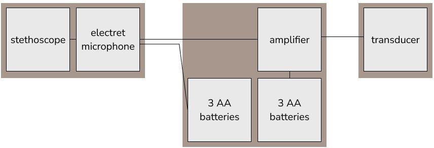
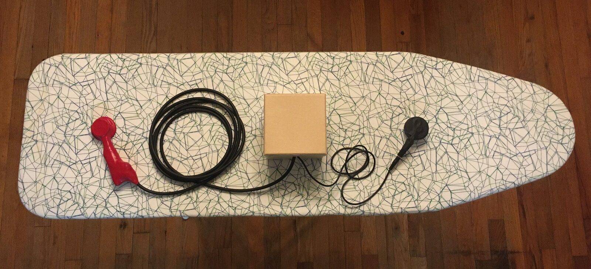
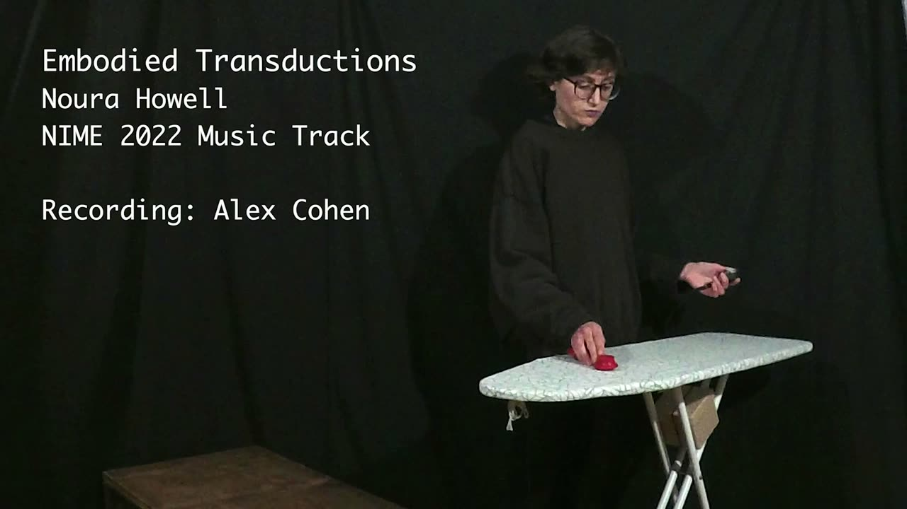

Embodied Transductions
Project Description
Embodied Transductions explores alternative ways of knowing bodies—both human and non-human—through hacking biomedical technology for musical expression.
Technologically, the instrument consists of a modified stethoscope whose signal routes to a microphone, then to an amplifier, then to a transducer. This vibrates an ironing board, a cedar hope chest, and the performer’s body. The stethoscope listens to heart sounds, breathing, vocals, and the vibrations of the ironing board and cedar chest to create feedback. The simple setup embraces DIY and amateur hack aesthetics that often resist authority.
Philosophically, Embodied Transductions critiques Foucauldian medical authority and explores feminist approaches to embodied knowledges. Who or what has the authority to speak truth about health and life? Contrasting the feminized labor of ironing and the hope chest’s traditional role in young women's preparations for marriage, Embodied Transductions repurposes a medical stethoscope to amplify latent resistances and resonances of these materials and a woman's body. The performance demands knowing through embodied experience, and sharing agency with the unpredictability of feedback through physical materials.
This work advances the composer/performer's broader agenda exploring alternative epistemologies with biodata—data about human bodies, behavior, thoughts, and feelings, such as heart rate, step count, etc—and the role of this data in everyday meaning-making and and living ‘well’. Biodata is often analyzed to yield insights for 'health' and 'productivity'. Yet, this approach risks reducing the complexity of lived experiences to numbers and, through the perceived authority of data, can delegitimize other ways of knowing. Measurements always leave something out, and measurements not only describe but also co-construct reality. To help explore alternatives, Barad’s concept of intra-action emphasizes the entanglement of self and environment—each measurement makes an agential cut between sensor and what is sensed [1]. Simondon’s transduction emphasizes dynamic transformations of energy from one form to another, leading to individuation of bodies—how we become ourselves [2]. Embodied Transductions repurposes a traditionally medical biosensor to explore a way of knowing the body and mundane domestic objects through the phenomena of their intra-actions, transductions, and becomings.
Type of submission
Option 1: “New NIME” - traditional NIME music sessions aimed at showcasing pieces performed or composed with new interfaces for musical expression.
Program Notes
Embodied Transductions explores alternative, feminist ways of knowing bodies—both human and non-human—through hacking biomedical technology for musical expression. Who or what has the authority to know, to speak the truth about health and life? A hacked medical-grade stethoscope listens to heart sounds, breathing, vocals, and the vibrations of an ironing board and cedar hope chest, with an amplifier and transducer to create feedback. Contrasting the feminized labor of ironing and the hope chest’s traditional role in young women's preparations for marriage, Embodied Transductions repurposes a medical stethoscope to amplify latent resistances and resonances of these materials and the composer/performer's woman body.
Media


The stethoscope creates sound waves in a rubber tube. The electret microphone listens to the end of this tube. The stethoscope and electret microphone are embedded in handle. An audio cable extends from the handle to the box in the middle. The box contains the amplifier as well as battery power. From the box, another audio cable extends to the transducer. The expressive potential of the instrument stems from flexibly placing and replacing the stethoscope input and transducer output on different materials and the performer’s body to mediate feedback in different ways.


Stethoscope handle, box of amplifier and batteries, and transducer laid out on the ironing board.

▶The composer/performer uses Embodied Transductions to create feedback sounds on an ironing board and cedar hope chest.
Recording: Alex Cohen. Editing: Noura Howell.
Ethics Statement
The work explores ethical, biopolitical issues of who or what has the authority to produce ‘true’ knowledge about health and life. Responding to how biodata has been valorized as an authoritative way of knowing the body, the piece seeks to reconfigure biodata (from the stethoscope) to better support and legitimize embodied, experiential ways of knowing one’s body—especially women’s bodies, as women are especially subjected to external harmful bodily judgments.
The composer/performer is a cis white woman. The piece could do more to take an intersectional feminist approach to supporting more diverse forms of embodiment; e.g., trans women embodiment. The emphasis in transduction, transference of energy, and subtle transitions is perhaps one way to better engage these themes in the future.
Regarding accessibility, Embodied Transductions as an instrument offers both sonic and tactile interaction.
Regarding sustainability, Embodied Transduction does use electronic components which might carry an environment toll. Yet, it uses relatively few electronic components: electret microphone, amplifier chip, transducer, AA batteries, and cables. The box is paper cardstock, a relatively renewable material. The ironing board and cedar hope chest were sourced used.
Acknowledgements
Special thanks to Alex Cohen for video recording, video editing assistance, and feedback. Thank you to Majid Araim and Priscilla Smith for inviting and hosting the first performance of this work.
Citations
- ↩Barad, K. (2003). Posthumanist Performativity: Toward an Understanding of How Matter Comes to Matter. Signs, 28(3), 801–831. https://doi.org/10.1086/345321
- ↩Combes, M. (2012). Gilbert Simondon and the Philosophy of the Transindividual. MIT Press. https://mitpress.mit.edu/books/gilbert-simondon-and-philosophy-transindividual